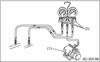

CAUTION:
• While working, be sure to wear protective goggles and protective gloves.
• Air in the cycle is a cause of degraded air conditioning, and moisture is a cause of clogging (freezing) or the generation of rust in the cycle.
To eliminate such air and moisture, vacuum using the vacuum pump before refilling coolant. By vacuuming the inside of the cycle, it is possible to boil away and evaporate moisture even at room temperature.
1. Close all valves of the manifold gauge.
|
L: |
Low pressure gauge |
|
H: |
High-pressure gauge |
|
(1) |
Low pressure valve |
|
(2) |
Vacuum pump valve |
|
(3) |
High pressure valve |
|
(4) |
For low pressure |
|
(5) |
For vacuum pump |
|
(6) |
For high pressure |
2. Install the low-/high-pressure hoses to the service ports on the vehicle.

|
(1) |
Low-pressure side service port |
|
(2) |
High-pressure side service port |
|
(3) |
Close |
CAUTION:
Make sure the secure connection.
3. Connect the center manifold hose of the manifold gauge to the vacuum pump.
4. Operate the vacuum pump, then open the valve on the low-/high-pressure sides. Next, open the center manifold hose valve to begin vacuuming.

|
(1) |
Vacuum pump |
|
(2) |
Open |
CAUTION:
Always use a vacuum pump to vacuum.
5. 5 minutes or more after the evacuation, when the reading of the low pressure gauge is 100.0 kPa (750 mmHg, 29.5 inHg) or higher, close the valves on the center manifold hose and stop the vacuum pump.
6. Keep the status for 5 to 10 minutes after closing both the low pressure side and high pressure side valves, then check if there is any change in the low pressure gauge indicator. When the gauge indicator changes, it is a sign of leakage. Check and repair the connections of the pipe and hose. After repairing fault, repeat from step 1).
7. If there is no leak, continue vacuuming for another 20 to 30 minutes.
8. Close all the valves and stop the vacuum pump.
9. Following the can tap operation manual, install it to the refrigerant can.
|
(1) |
Tap valve |
|
(2) |
Center manifold hose |
10. Disconnect the center manifold hose from the vacuum pump, and connect the hose to the tap valve.
11. When a refrigerant recovery container is used, measure the refrigerant amount in use using a weight scale. Then, connect with the center manifold hose.
|
(1) |
Refrigerant recovery container |
|
(2) |
Weight scale |
12. Open the valve on the HFC-134a source.
13. Loosen the center manifold hose connection on the manifold gauge set (if applicable, press a purge valve on the manifold gauge) only for a couple of seconds to allow the air in the center manifold hose to be bled by the refrigerant pressure.
14. Open the high pressure side valve and the low pressure side valve on the manifold gauge and fill the coolant.
|
(1) |
Open |
|
(2) |
Open |
CAUTION:
When starting the engine and filling, do not open the high pressure side valve. Always make sure to fill from the lower pressure side.
15. Close all the valves when the gauge indicator reaches 200 kPa (1,500 mmHg, 59.1 inHg).
16. Using a leak tester, check the system for coolant leaks.
17. After checking for coolant leaks, fill the coolant to the prescribed level.
18. If the HFC-134a source is empty, close all the valves, close the valve on the can tap, and replace the empty source with a new part. After replacing HFC-134a source with a new part, and purging the air, restart the work.
19. When the filling efficiency of the coolant drops, close all the valves.
20. Check that the valves on low-/high-pressure sides are closed. Start the engine with the A/C switch OFF.
21. To prevent damaging the compressor, turn the A/C switch to ON and OFF several times quickly.
22. Set up the vehicle to the following status:
CAUTION:
When starting the engine and filling, do not open the high pressure side valve. Always make sure to fill from the lower pressure side.
• A/C switch ON
• Engine running at 1,500 rpm
• Blower speed setting to “HI”
• Temperature setting to “MAX COOL”
• Air inlet setting to “RECIRC”
• Window open
23. Open the low pressure side valve and fill the coolant to the prescribed level.
24. After filling the coolant, close all valves and remove the hose from the service port.
25. Mount the cap to the service port.